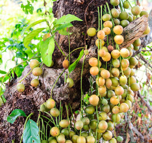
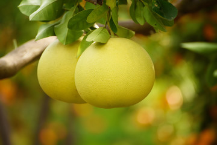

লটকন
- হজম শক্তি বাড়ায়।
- ত্বক পরিষ্কার রাখতে সাহায্য করে।
- রোগ প্রতিরোধ ক্ষমতা বাড়ায়।
Precaution: বেশি খেলে অ্যাসিডিটি বা পেটে গ্যাস হতে পারে।

শশা
- শরীরকে হাইড্রেটেড রাখে কারণ এতে পানির পরিমাণ বেশি।
- ত্বক সুস্থ ও নরম রাখতে সাহায্য করে।
- ওজন কমাতে সাহায্য করে, কারণ এতে ক্যালোরি খুব কম।
- ডায়জেস্টিভ সিস্টেম ভালো রাখে এবং কোষ্ঠকাঠিন্য কমায়।
- অ্যান্টিঅক্সিডেন্ট সমৃদ্ধ, যা শরীরের ক্ষতিকর মুক্ত র্যাডিকেল থেকে রক্ষা করে।
Precaution: অনেক বেশি শশা খেলে পেট ফাঁপা বা গ্যাসের সমস্যা হতে পারে। যাদের পাচনতন্ত্র সংবেদনশীল, তারা সাবধানে খাওয়া উচিত।

জাম্বুরা
- শরীর ঠান্ডা রাখে।
- রক্তচাপ নিয়ন্ত্রণে সহায়তা করে।
- ডিটক্সিফাই করে এবং ত্বক ভালো রাখে।
Precaution: ওষুধের সাথে ক্রিয়া করতে পারে, চিকিৎসকের পরামর্শ ছাড়া বেশি না খাওয়াই ভালো।

জামরুল
- ডায়াবেটিস রোগীর জন্য উপকারী।
- দেহে পানি শূন্যতা রোধ করে।
- বমিভাব ও অ্যাসিডিটি কমায়।
Precaution: পরিষ্কার করে না খেলে পেটের সমস্যা হতে পারে।
কামরাঙা
- ব্রণ ও ত্বকের সমস্যায় উপকারী।
- ডায়াবেটিস ও রক্তচাপ নিয়ন্ত্রণে সাহায্য করে।
- শরীর ঠান্ডা রাখে।
Precaution: কিডনি সমস্যায় ভুগলে চিকিৎসকের পরামর্শ ছাড়া না খাওয়াই ভালো।

কলা
- ভিটামিন B6 ও পটাশিয়ামের ভালো উৎস, যা হার্টের স্বাস্থ্য রক্ষায় সাহায্য করে।
- হজম ভালো রাখে এবং কোষ্ঠকাঠিন্য কমায়।
- শক্তি বৃদ্ধি করে, কারণ এতে সহজে পাচ্য শর্করা থাকে।
- মস্তিষ্কের কাজ উন্নত করতে সহায়তা করে।
- দৈনন্দিন ক্লান্তি কমাতে সাহায্য করে।
Precaution: অতিরিক্ত কলা খেলে পেট ভারি লাগতে পারে, এবং ডায়াবেটিস রোগীদের পরিমাণ নিয়ন্ত্রণে রাখতে হবে।